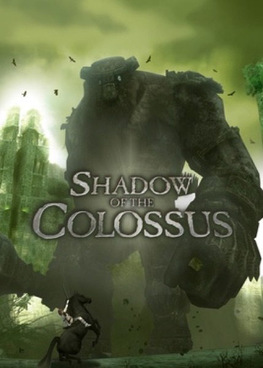

Adventure · 2005
Shadow of the Colossus
Sixteen fights, an empty world and an argument about what games can mean.

Cover: Wikipedia: Shadow of the Colossus
Facts
- Released
- 2005-10-18
- Genre
- Action-Adventure
- Category
- Adventure
- Platforms
- PlayStation
- Developers
- Team Ico
- Publishers
- Sony Interactive Entertainment